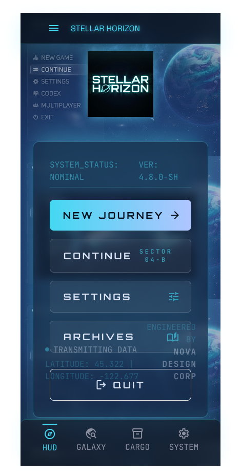
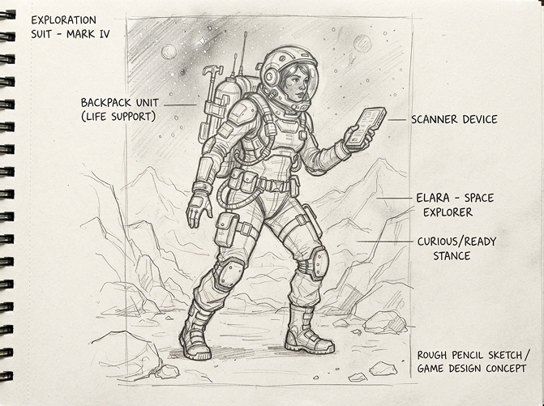
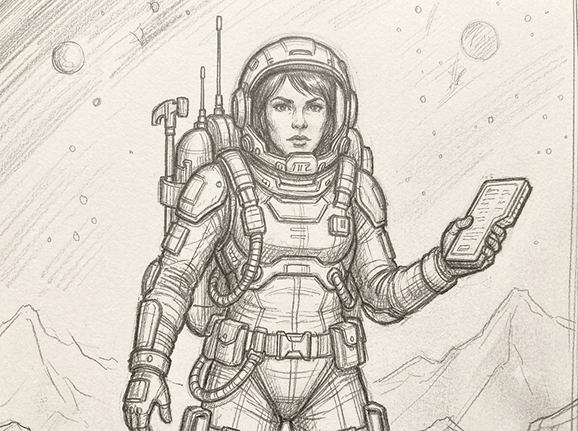

Define the Brief
Identify purpose, audience, and direction.
Concept Art & Character Development
A character design exploration combining visual-first and story-first approaches through sketching, personality development, narrative building, and design refinement.

This project explored two complementary approaches to character design: beginning with visual shapes and discovering a personality, and beginning with a story before developing the visual language.
The process moved from loose sketches and silhouette studies to expression development, colour exploration, refinement, and a final character supported by a consistent narrative.

Early sketches tested proportion, posture, costume, and silhouette to find a design that remained recognizable even without interior details.
This creative flow maps the decisions used to develop the character’s appearance, personality, and final presentation.
Identify purpose, audience, and direction.
Start visual-first or story-first.
Sketch body shapes, poses, and proportions.
Choose the strongest readable concept.
Define traits, background, and motivation.
Develop clothing, expressions, and accessories.
Explore palettes supporting mood and identity.
Complete the polished character presentation.

The character’s story informed their posture, clothing, facial expressions, and visual details. Each element was chosen to communicate something about how the character moves, reacts, and relates to their world.
This helped the final artwork feel intentional rather than decorative, while keeping the design flexible enough for illustration, animation, or game applications.
Learned how silhouette, proportion, and posture can communicate personality before details are added.
Improved my ability to connect narrative decisions with consistent visual choices.
Developed a more iterative sketching process that moved from broad exploration to focused refinement.